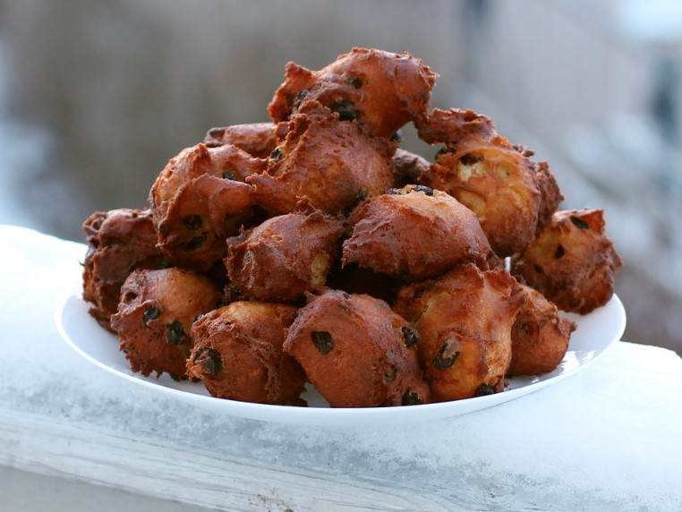

Oliebollen (Dutch Doughnuts)
This deep fried snack is often eaten around New Years Eve. This recipe is with raisins and currants, the more common way to eat it. However, you can also add dried fruit or apple pieces instead. The oliebollen freeze extremely well. To reheat, just warm in the oven for a few minutes.
metadata
Created on 2020-04-13 Last updated on 2020-04-17
Recipe should yield this much: 20 oliebollen.
Estimated time needed: At least 1 hours 48 minutes. At most 2 hours 3 minutes.
Ingredients
| 500 | g | flour | ||
| 333 | ml | beer | preferably a tripel or quadrupel, if you don't want to use beer, replace with milk | |
| 200 | g | hot water | ||
| 80 | ml | milk | at room temperature | |
| 70 | g | raisins | ||
| 40 | g | currants | dried zante currants, can be replaced by more raisins | |
| 40 | g | butter | ||
| 20 | g | sugar | ||
| 10 | g | active dry yeast | 10 g active dry yeast can be replaced by 35 g fresh yeast | |
| 7 | g | salt | use a bit less if using salted butter | |
| 2 | l | vegetable oil | make sure that the oil doesn't burn at 180 ℃, we use sunflower oil | |
| 2 | egg | |||
| 1 | tsp | lemon juice |
Scaling
Timeline
Directions
⌛ Active time 2 minutes | Passive time 15 minutes
- 70 g raisins
- 40 g currants | dried zante currants, can be replaced by more raisins
- 200 g hot water
Soak raisins and currants:
Soak the raisins and currants in hot water for 10-15 minutes.
⌛ Active time 1 minutes
- 333 ml beer | preferably a tripel or quadrupel, if you don't want to use beer, replace with milk
- 80 ml milk | at room temperature
- 10 g active dry yeast | 10 g active dry yeast can be replaced by 35 g fresh yeast
Dissolve yeast in liquid:
Mix together the milk and beer. The liquid should be slightly above room temperature before you add yeast. If it's not warm enough yet, warm the liquid slightly in the microwave oven. However, be careful, as you don't want the liquid to be hot. When the right temperature is reached, add the yeast and stir to dissolve it. The mixture should start to form bubbles on the surface when you let it sit for a few minutes (indicating that the yeast is alive).
⌛ Active time 1 minutes
- 40 g butter
- 500 g flour
- 2 egg
- 20 g sugar
Mix ingredients:
Soften (but don't melt) the butter. Add flour, sugar, egg and the softened butter to a kitchen machine or mixer bowl. Mix using the flat beater.
⌛ Active time 1 minutes | Passive time 1 minutes
Add the beer and milk:
Carefully add the beer liquid while mixing on low. Be careful to not overmix the batter.
⌛ Active time 1 minutes
Dry the fruits:
When the raisins and currants have been soaking for 10-15 minutes, remove them from the bowl with water and put on a paper towel to dry. Pat dry with paper towel
⌛ Active time 1 minutes | Passive time 1 minutes
- 7 g salt | use a bit less if using salted butter
- 1 tsp lemon juice
Add the rest of the ingredients:
Carefully add the salt, lemon juice, raisins and currants to the batter. Again, try not to mix too much.
⌛ Active time 1 minutes | Passive time 40 minutes
Proof for 40 minutes:
Cover the bowl and let the batter proof for half an hour at room temperature. The batter will almost double in size, so make sure the bowl is large enough.
⌛ Active time 1 minutes | Passive time 15 minutes
Beat once, proof 15 minutes:
Using a large spoon, beat the dough once. Just go all the way down to the bottom of the bowl, and lift the spoon again, using a circular motion. The batter should shrink a bit. Now cover the bowl again and let it rise for 15 more minutes.
⌛ Active time 1 minutes | Passive time 10 minutes
- 2 l vegetable oil | make sure that the oil doesn't burn at 180 ℃, we use sunflower oil
Heat oil in pan:
Fill a large pan with oil. Heat the oil to 180 ℃. Our target deep frying temperature is 175, but the oil will cool down when batter is added.
⌛ Active time 20 minutes | Passive time 5 minutes
Deepfry the doughnuts:
When your oil is the right temperature and the batter has risen enough, it is time to deep fry. Fill an ice cream spoon (or normal spoon) with batter. Then scrape the batter off, into the oil, using a spoon. If everything is going great, the balls will turn themselves when ready. If not, just use your skimmer to turn them when one side gets golden brown. Try to fry about 4 doughnuts (or less) at a time, and check once it a while that the temperature is around 175 ℃. You can also check whether your temperature and time are good by cutting through one of your first batch doughnuts. If it is too greasy, turn up the heat a little.
⌛ Active time 1 minutes | Passive time 5 minutes
Cool down:
When the doughnuts are done deep frying, lift them out of the oil with the skimmer. Put them on a paper towel to let some oil drip off. After a few minutes, move to a cooling rack, so the oliebollen remain crisp on the outside. Serve with powdered sugar.